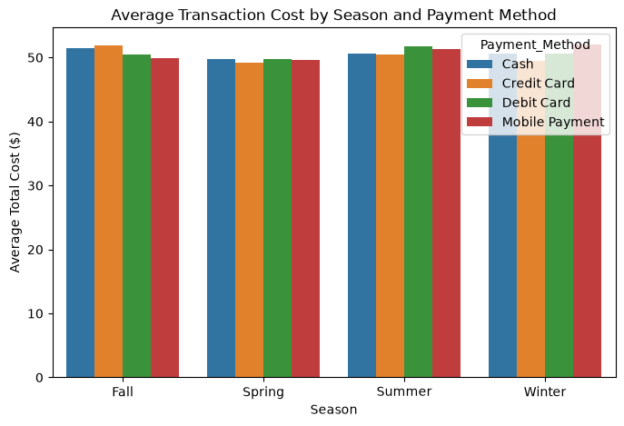
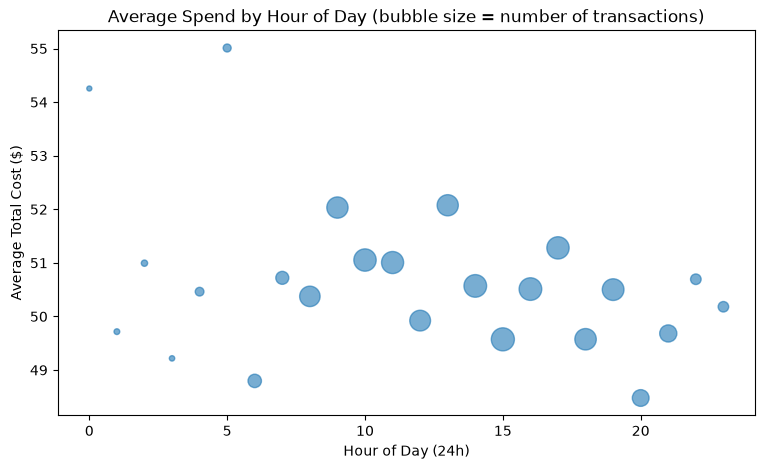
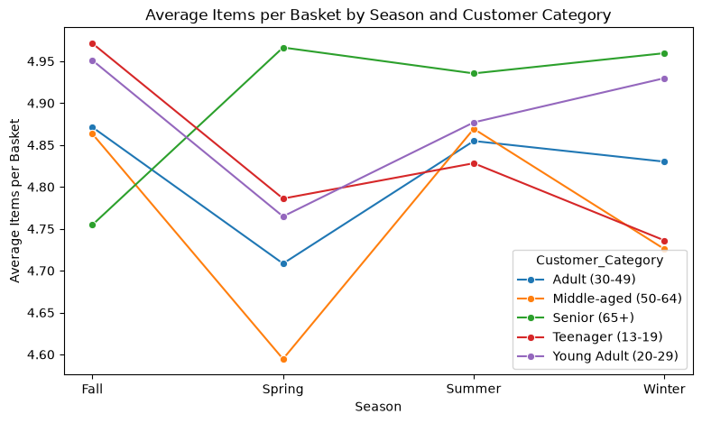

import pandas as pd
import matplotlib.pyplot as plt
import seaborn as snsThe Price of Convenience
A Brief Overview of Simulated Convenience Store Data
df = pd.read_csv("convenience_store.csv")
df.head()| Transaction_ID | Date | Customer_Name | Product | Total_Items | Total_Cost | Payment_Method | City | time_of_day | Customer_Category | Season | Promotion | Member | |
|---|---|---|---|---|---|---|---|---|---|---|---|---|---|
| 0 | 1000000000 | 2022-06-20 | Michael Young | ['Tea', 'Swim Cap', 'Sandals', 'Slippers'] | 4 | 38.27 | Cash | Eduardoberg | 13:24:15 | Adult (30-49) | Winter | Discount on Selected Items | No |
| 1 | 1000000001 | 2023-07-23 | Lindsay Simmons | ['Band-Aids', 'Lighter Fluid', 'Beef'] | 3 | 21.63 | Cash | Mariaton | 09:56:29 | Young Adult (20-29) | Winter | Discount on Selected Items | No |
| 2 | 1000000002 | 2021-10-28 | Mrs. Jessica Reed | ['Onion Powder', 'Dish Soap', 'Salt', 'Aluminu... | 5 | 43.19 | Mobile Payment | Strongview | 18:29:29 | Adult (30-49) | Summer | BOGO (Buy One Get One) | No |
| 3 | 1000000003 | 2022-11-04 | Spencer Rowe | ['Apples', 'Tomato Sauce', 'Tape', 'Bug Spray'... | 8 | 93.44 | Credit Card | North Jeremiah | 17:02:19 | Senior (65+) | Fall | Discount on Selected Items | No |
| 4 | 1000000004 | 2023-09-29 | Brenda Jones | ['Bug Spray', 'Bath Mat', 'Multi-Surface Clean... | 7 | 55.56 | Debit Card | Sandramouth | 19:08:32 | Adult (30-49) | Fall | BOGO (Buy One Get One) | Yes |
Chart 1: Average Spend by Season and Payment Method
avg_by_season = df.groupby(["Season", "Payment_Method"])["Total_Cost"].mean().reset_index()
plt.figure(figsize=(8, 5))
sns.barplot(data=avg_by_season, x="Season", y="Total_Cost", hue="Payment_Method")
plt.title("Average Transaction Cost by Season and Payment Method")
plt.ylabel("Average Total Cost ($)")
plt.xlabel("Season")
plt.show()
- We can see that the average transaction cost stays flat across the four seasons and different payment methods.
- I chose a bar chart because it makes things like dollar averages easy to compare. The coloring helps distinguish between different payment methods. This helped make it easy to compare payment methods.
- Because the bars are so close in height, small differences are hard to spot at a glance.
Chart 2: Average Spend by Hour of Day
df["hour"] = pd.to_datetime(df["time_of_day"], format="%H:%M:%S").dt.hour
hourly = df.groupby("hour").agg(
avg_cost=("Total_Cost", "mean"),
n_transactions=("Transaction_ID", "count")
).reset_index()
plt.figure(figsize=(9, 5))
plt.scatter(hourly["hour"], hourly["avg_cost"], s=hourly["n_transactions"] / 5, alpha=0.6)
plt.title("Average Spend by Hour of Day (bubble size = number of transactions)")
plt.xlabel("Hour of Day (24h)")
plt.ylabel("Average Total Cost ($)")
plt.show()
- We can see that the average transaction cost stays fairly steady with no real big outliers. The bubble size shows that there are larger transactions later in the day.
- The x and y axes show the trend between the cost and time of day. The bubble size also shows how busy individual hours are without having to use another chart. This made it easy to see if there were any particularly high traffic times.
- The bubble size here can be hard to interpret just by looking at the chart. Perhaps adding a toolkit here that would make the chart more interactive would be better for future analysis.
Chart 3: Average Items per Basket by Season and Customer Category
avg_items = df.groupby(["Season", "Customer_Category"])["Total_Items"].mean().reset_index()
plt.figure(figsize=(9, 5))
sns.lineplot(data=avg_items, x="Season", y="Total_Items", hue="Customer_Category", marker="o")
plt.title("Average Items per Basket by Season and Customer Category")
plt.xlabel("Season")
plt.ylabel("Average Items per Basket")
plt.show()
- We can see there are no flat patterns across groups and that different customer segments act differently across seasons. For example, Teenagers and Young Adults start highest in Fall, then drop through Spring, while Seniors do the opposite.
- The axes make the chart easy to read and interpret how a group’s basket size changes with the seasons. Like in the first chart, color is used to separate and distinguish between different customer segments.
- There are a lot of converging and overlapping lines that could make this chart hard to read at a glance.